पुरबुत अली की लड़ाई (1971)
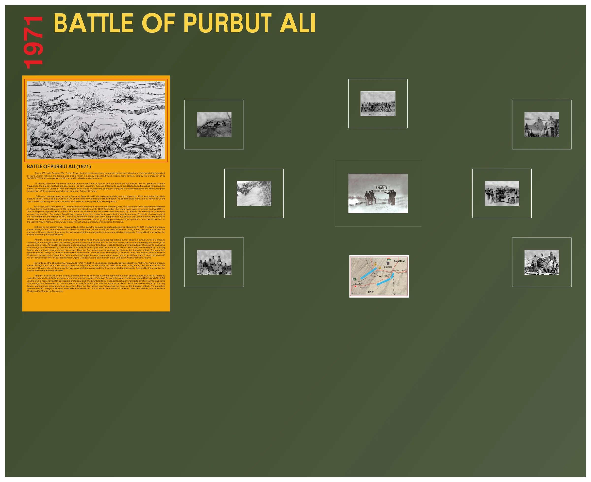
बैटल गैलरी चित्र
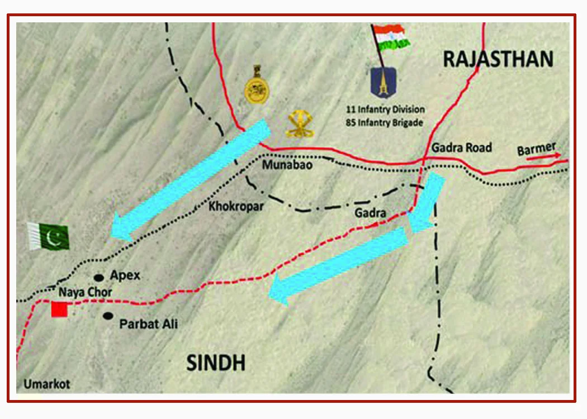
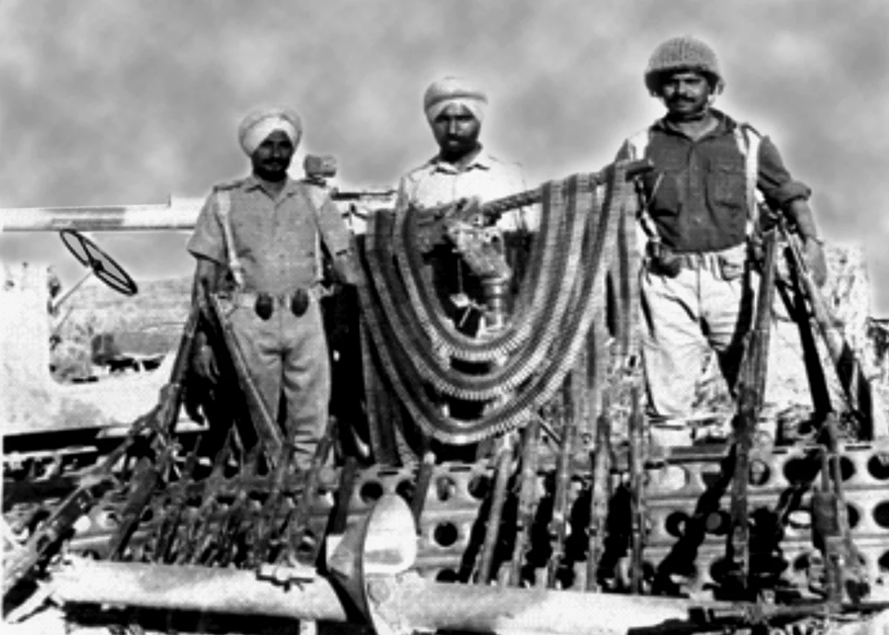
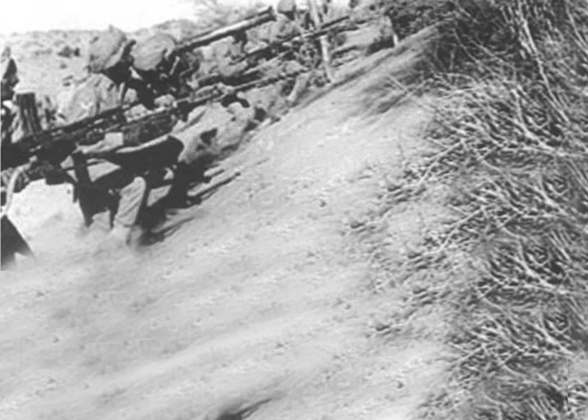
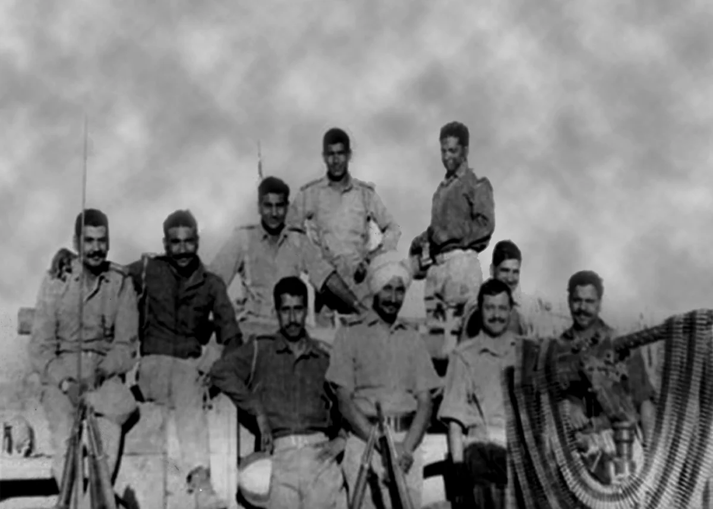
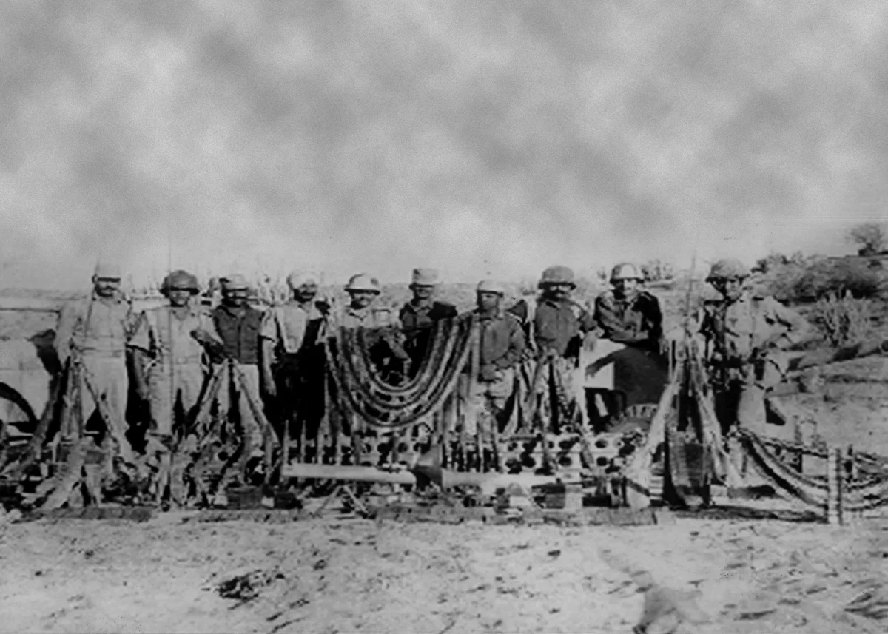
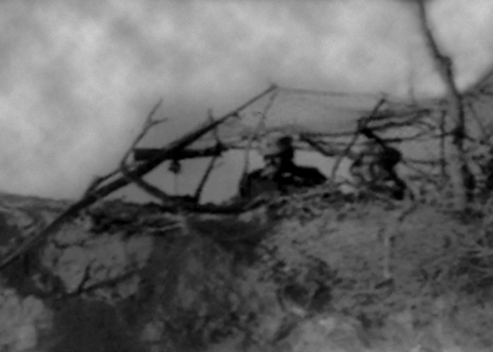
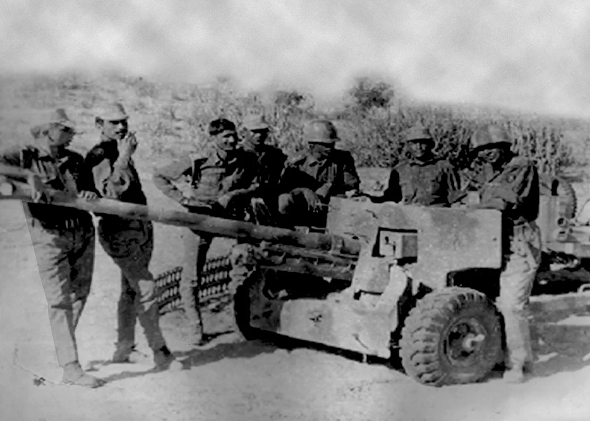
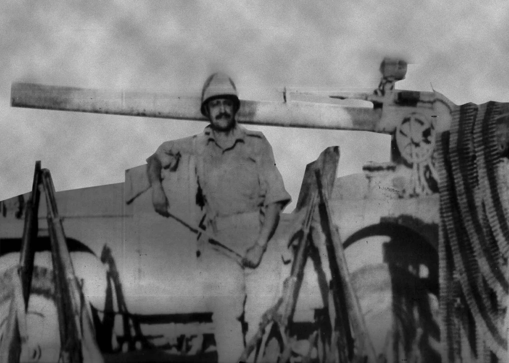
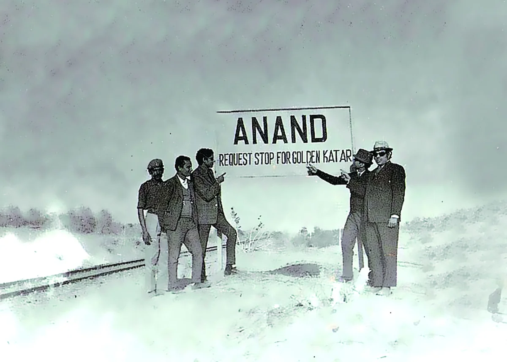
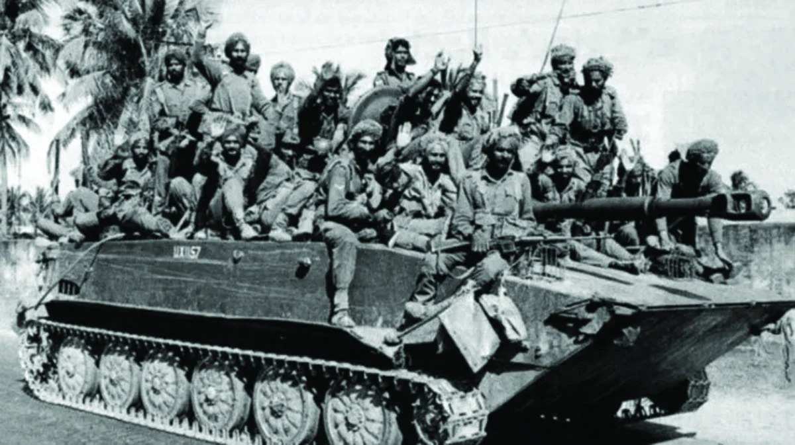
श्रेणी: बैटल गैलरी
रेजिमेंट: सिख रेजिमेंट
1971 के भारत-पाकिस्तान युद्ध के दौरान, पुरबुत अली भारतीय सेना के सामने दुश्मन का आखिरी गढ़ था पाकिस्तान में नया चोर की हरित पट्टी तक पहुँच सकता है। विशेषता रेतीली बंजर भूमि में एक गंजा पहाड़ी थी दुश्मन के इलाके में 65 किमी अंदर, मोर्टार की एक प्लाटून के साथ 39 फ्रंटियर फोर्स की दो कंपनियों द्वारा कब्जा कर लिया गया और चार एमएमजी. दक्षिणी कमान की 11 इन्फैंट्री डिवीजन को राजस्थान के बाड़मेर सेक्टर में केंद्रित किया गया था अक्टूबर 1971 नया चोर की ओर ऑपरेशन के लिए। डिवीजन में दो ब्रिगेड और एक टी-55 टैंक स्क्वाड्रन था। मुख्य हमला गडरा रोड-मुनाबाओ धुरी पर था और सहायक हमले खिनसर और चाचरो पर थे। 85 इन्फैंट्री ब्रिगेड को मुनाबाव-नयाचोर अक्ष पर ऑपरेशन करने का काम सौंपा गया था इसका नेतृत्व 10 सिख कर रहे थे, जिसकी कमान लेफ्टिनेंट कर्नल केसी कैली के हाथ में थी।
एपेक्स हिल और पुरबुत अली सेक्टर में पाकिस्तान की प्रमुख सुरक्षा अच्छी तरह से खोदी गई और तैयार की गई थी। 10 सिख को शुरू में गाज़ी कैंप, एक बॉर्डर आउट पोस्ट (बीओपी) और फिर आगे पर कब्ज़ा करने का काम सौंपा गया था खोखरोपार का इलाका. तब बटालियन को धुरी खोखरोपर-नया चोर पर एडवांस गार्ड के रूप में कार्य करना था नया चोर पर ब्रिगेड हमले के लिए एक मजबूत आधार स्थापित करें। 04 दिसम्बर 1971 की पहली रोशनी से बटालियन को मुनाबाओ के पास अपने फॉरवर्ड असेंबली एरिया में अच्छी तरह से खोदा गया था। गाजी पर भारी बमबारी के बाद कैंप और खोखरोपर, 10 सिखों ने 04/05 दिसंबर की रात को हमला किया, दुश्मन को पकड़ लिया गया आश्चर्य हुआ और 0600 बजे तक, गाजी कैंप पर बिना किसी प्रतिरोध के कब्जा कर लिया गया। अग्रिम कार्यवाही फिर से शुरू कर दी गई बिना देर किए और 0830 बजे तक, खोखरोपर की बस्ती को भी साफ़ कर दिया गया। 11 दिसंबर तक, एपेक्स हिल भी पकड़ लिया गया - अगला उद्देश्य पुरबुत अली की दुर्जेय विशेषता थी, जो का हिस्सा था नया चोर के आसपास मुख्य सुरक्षा। 10 सिख ने दो चरणों में तीन कंपनियों के साथ हमला शुरू किया, एक के साथ कंपनी रिजर्व के रूप में. पहले चरण में डेल्टा और ब्रावो कंपनियों को लेफ्ट पर कब्ज़ा करने का काम सौंपा गया था 13 दिसंबर 1971 को 0430 बजे बम्प और फॉरवर्ड स्पर। दूसरे चरण में अल्फा कंपनी को पास होना था ब्रावो कंपनी के माध्यम से, जिसे रिजर्व में रखा गया था।
उद्देश्य पर लड़ाई भारी थी लेकिन 0430 बजे तक, दोनों कंपनियों ने अपना कब्ज़ा कर लिया था उद्देश्य. 05:15 बजे, अल्फा कंपनी अपने उद्देश्य, डेप्थ स्पर, की ओर ब्रावो कंपनी से होकर गुजरी। जहां यह सचमुच आने वाले दुश्मन के जवाबी हमले से टकरा गया। दुश्मन से सिर्फ 20 गज आगे, दो अग्रिम प्लाटून के लोगों ने स्थिर संगीनों के साथ दुश्मन पर हमला किया। वजन देखकर आश्चर्य हुआ हमले से, दुश्मन डगमगा गया और भाग गया। इस शुरुआती झटके के बाद, दुश्मन वापस लौट आया हिंसक तरीके से और बार-बार जवाबी हमले किए। हालाँकि, चार्ली कंपनी मेजर अमरीक सिंह गिल के अधीन थी पुरबुत अली पर दोबारा कब्ज़ा करने की दुश्मन की कोशिशों को नाकाम कर दिया।
वीरता के कार्य बहुत थे - एक घायल मेजर अमरीक सिंह गिल ने स्वेच्छा से अपने दो सैनिकों को आगे बढ़ाया पलटनों के जवाबी हमलों का जवाब देने के लिए सूबेदार गुरचरण सिंह ने उनका नेतृत्व करते हुए अपने प्राण न्यौछावर कर दिए एक भयंकर दुश्मन के जवाबी हमले के खिलाफ पलटन और नायक गुरजंत सिंह ने सर्वोच्च बलिदान दिया भीषण हाथा पाई की लड़ाई. एक युवा सिपाही, मोहन सिंह ने बहादुरी से दुश्मन की मशीन गन को मार गिराया बटालियन के पार्श्वों पर हमले की धमकी देना। पूरा ऑपरेशन 14 दिनों तक चला -10 सिख थे युद्ध सम्मान 'पुरबुत अली' से सम्मानित किया गया और इसने छह वीर चक्र, तीन सेना पदक, एक विशिष्ट पुरस्कार अर्जित किया सेवा पदक और छह उल्लेख-इन-डिस्पैच।

मोबाइल पर खोलें
अपने फोन पर अंग्रेजी, हिंदी या पंजाबी में देखने के लिए इस QR कोड को स्कैन करें।